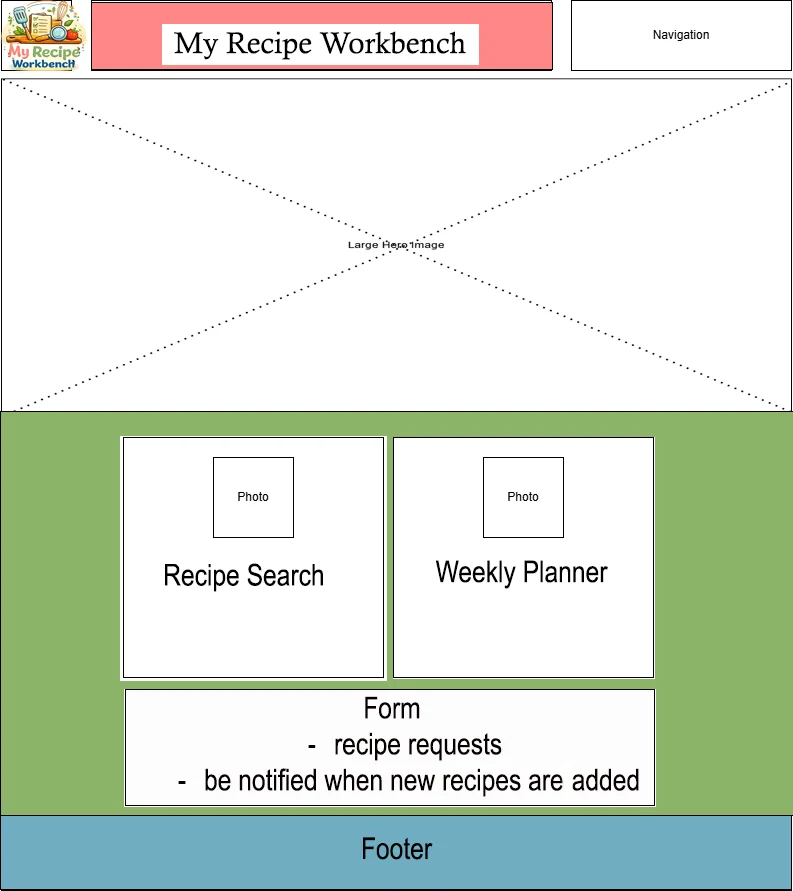
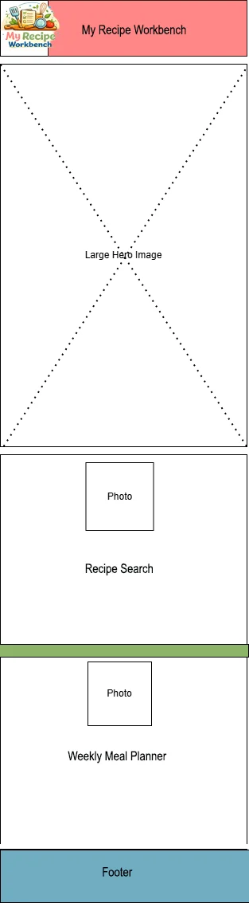

Pam Christison - Final Project
Site Name
The site name is "My Recipe Workbench". I chose this name because last term I started trying to organize some of my favorite recipes in MySQL Workbench, and I've been trying to figure out how to make it more usable. The domain is available.
Site Purpose
The site will provide searchable recipes that are indexed. It will also have menu planning capability - you will be able to save recipes to a weekly planner. I'm planning to have at least 15 recipes in the site.
Scenarios
- A user may need reliable recipes ideas and want to search for inspiration.
- A user may want recipes for delicious baked goods that work every time.
- A user may want easy dinner recipes.
- A user may want to plan a weekly menu.
Color Scheme
The color scheme is bright and cheerful. I'm using a creamy background color and I plan to have colorful structure around white recipe cards for easy readability. The footer is using #70adc2, the header is using #ff878, and behind recipe cards I'm planning to use #8cb369. The wireframes below show my first draft ideas for the colors. Hopefully it will look friendly and not random.
Typography
Heading text - Lora
Body text - Roboto
Wire Frame
Desktop

Mobile
